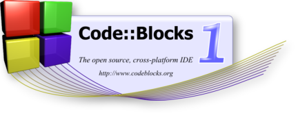

CB_VAR_REVISION_INFO
CB_SAFE_MODE
Create a new project
Open an existing project
Visit the Code::Blocks forums
Report a bug
Request a new feature
CB_VAR_RECENT_FILES_AND_PROJECTS
© 2004 - 2008, The
Code::Blocks
Team.